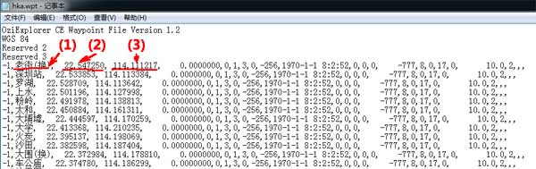

|
| 首页 | GeoTIFF | 今日花园Maps | OruxMaps | OZI | 资源 | 软件 | 联系 |
| 当前位置：OZI ---> OZI for Android1.15版中添加航点的方法 |
OZI for Android1.15版中添加航点的方法在OZI for Android1.15版中，要想航点正确地显示汉字， 必须设置一下软件的字符集代码页，具体方法是：“主菜单”—>“配置”—>“通常设置”—>“选择数据文件字符集代码页”，选择“Windows CP936 - GBK”项。OZI for Android1.15版的航点文件格式如下： |

|
在航点文件中，每个航点修改三个位置：(1)航点名称，(2)纬度坐标，(3)经度坐标，其余位置的数据都不用修改。具体数据如下： OziExplorer CE Waypoint File Version 1.2 WGS 84 Reserved 2 Reserved 3 -1,老街,22.547250,114.111217,0.0000000,0,1,3,0,-256,1970-1-1 8:2:52,0,0,0,-777,8,0,17,0,10.0,2,,, -1,深圳站,22.533853,114.113384,0.0000000,0,1,3,0,-256,1970-1-1 8:2:52,0,0,0,-777,8,0,17,0,10.0,2,,, -1,罗湖,22.528709,114.113642,0.0000000,0,1,3,0,-256,1970-1-1 8:2:52,0,0,0,-777,8,0,17,0,10.0,2,,, 注意：航点文件的后缀是.wpt。航点文件必须是ASCII字符文件，不能是UTF-8字符文件。用Windows自带的记事本进行编辑就是ASCII字符文件。 |
| www.todaygarden.net |
版权所有 2010-2020 今日花园 |